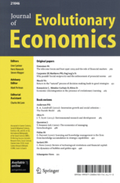
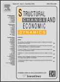
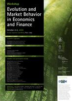

older stuff
Table of Contents
- Older Stuff
-
- San Miniato Summer School [2024-09]
- Oil prices report updated
- European fuel prices report updated
- Daily stock prices from Alpha Vantage
- Daily stock prices from Yahoo Finance
- San Miniato Summer School [2019-09]
- Alpha Vantage tutorial [2019-06]
- Wisdom of (Artificial) crowds [2019-05]
- San Miniato Summer School [2018-09]
- Presentation at Computation in Econocmis and Finance (CEF) 2018 [2018-06]
- Time and heterogeneity in complex systems between models and data [2018-6]
- New Results on Betting Strategies, Market Selection, and the Role of Luck [2018-5]
- Momentum and Reversal in Financial Markets with Persistent Heterogeneity [2018-5]
- gbutils, yafimm and naif [2017-12]
- Aggregate fluctuations and the distribution of firm growth rates [2017-09]
- San Miniato Summer School [2017-09]
- New paper on Economic Theory [2017-07]
- New paper on Physica A [2016-12]
- Speech at the ICC conference [2016-12]
- Historical Data from Yahho Finance [2016-12]
- New paper on Regional Studies [2016-11]
- subbotools [2016-10]
- San Miniato Summer School [2016-09]
- New paper on Small Business Economics [2016-07]
- Lecturing at WEHIA [2016-06]
- San Miniato Summer School [2015-09]
- Hokkaido Summer School [2015-08]
- Scuola Estiva 2015 [2015-06]
- gbutils added to official Debian repositories [2015-05]
- Released version 0.6 of the bose package [2015-04]
- Released alka-linux, "mint" version [2014-12]
- Released version 1.2.1 of subbotool [2014-12]
- Summer School of Mathematics for Economics and Social Sciences, San Miniato [2014-09]
- Errata page
- presentation in Jena, Germany
- Released version 5.6 of gbutils
- Beijing Normal University Exchange Programme [2013-09]
- Summer School of Mathematics for Economics and Social Sciences, San Miniato [2013-09]
- COST PhD School at Reykjavik [2013-07]
- PRIN09 second mid-term meeting [2013-05]
- PRIN09 mid-term meeting [2012-12]
- Presentation of math for economics at Sant'Anna [2012-12]
- Presentation of my research activity at Sant'Anna [2012-10]
- Summer School of Mathematics for Economics and Social Sciences [2012-09]
- Tutorial and Presentation at WEHIA [2012-06]
- Presentation at ECB [2012-02]
- Short report on oil price history [2011-12]
- PRIN09 kick-off meeting [2011-10]
- New release of the gbutils package [2011-09]
- Grant from MIUR [2011-7]
- Short report on oil price history [2011-5]
- Open data open society: report and interview [2011-1]
- 90 seconds speech describing (part of) the results of FINNOV Work Package 2
- Evolution and market behavior in economics and finance [2010-3]
- Productivity, profitability and growth: the empiric of firm dynamics [2010-1]
- Markets and firms dynamics: from micro patterns to aggregate behaviors [2009-12]
- Produttività e cambiamento del sistema economico italiano [2009-11]
- Evolution and Market Behavior in Economics and Finance [2009-10]
- DIMETIC session in Pecs [2009-07]
- CO3 dissemination event [2009-07]
-
Older Stuff
San Miniato Summer School [2024-09]
Oil prices report updated
The short report in oil price has been updated with new data.
European fuel prices report updated
The short report in oil derivatives price has been upodated with new data.
Daily stock prices from Alpha Vantage
Prices are retrieved using the Alpha Vantage provider and adjusted for stock splits. Data and procedure are described here.
Daily stock prices from Yahoo Finance
I updated my old tutorial on how to download historical time series from Yahoo Finance. Daily price series from 1990 to 2020 for all S&P 500 component stocks are provided as an example.
San Miniato Summer School [2019-09]
This year Stefano Galatolo, Università di Pisa and Isaia Nisoli, UFRJ presented "An introduction to random dynamical systems and their perturbations". See the web page of the school and the following nice picture

Alpha Vantage tutorial [2019-06]
Some times ago, Yahoo Finance stopped providing direct download of historical price data. Alpha Vantage seems to provide a valuable alternative. I've created a short tutorial on how to use it.
Wisdom of (Artificial) crowds [2019-05]
A short talk for the meeting of the Sant'Anna group on Information Theory and Machine Learning.
San Miniato Summer School [2018-09]
This year Marco Lippi lectured about "Mathematical Methods for Time Series Analysis". See the web page of the school and the following nice picture (some students are missing)

Presentation at Computation in Econocmis and Finance (CEF) 2018 [2018-06]
I presented a short talk on Betting Strategies, Market Selection, and the Role of Luck.
Time and heterogeneity in complex systems between models and data [2018-6]
I presented a short talk on Rational expectations, beliefs heterogeneity and market dynamics in the Workshop Unifying approach to the study of complex systems
New Results on Betting Strategies, Market Selection, and the Role of Luck [2018-5]
A new working paper written with Daniele Giachini has been published in the LEM Working Papers series.
Momentum and Reversal in Financial Markets with Persistent Heterogeneity [2018-5]
A new working paper written with Daniele Giachini and Pietro Dindo has been published in the LEM Working Papers series.
gbutils, yafimm and naif [2017-12]
Aggregate fluctuations and the distribution of firm growth rates [2017-09]
A new working paper written with Angelo Secchi and le Li has been published in the LEM Working Papers series.
San Miniato Summer School [2017-09]
This year Fosca Giannotti, Mirco Nanni and Riccardo Guidotti lectured about "Data Mining and Machine Learning for Business and Organizations". See the web page of the school and the following nice picture
![5Ri95YeNkl2UGAjrZ2l-giACWFdT0yNR4M58TEBc1IJL1ZOd7PeadWHTFzQYzdNoH_WRt3HY1TOEqGMgJ2Ift6Y3tVFkoc5uRWfUHSAvc275J6__Vaox0E55eHEYrPNAR9TvaAsoyctPkc0T29XpMFXHJhp_IH8frXYPwx8WTPh-xRt3WgffN-6kHNYop_OQVxqbPw-iDrRxEtsvXlqcUqf3JVfykfvw7wLrM7iHW-Cts2Xz2ONwh9sB4BPcUV040aPUK4kzQFHj_iIyfcpy2BdUIy9IM3rLypXnXeNBoSeojuHcfftLBm3o_YWVIxdg1gUTZ1lXfFhl4tFcFnprDTYq4oWXva-B4hxrTY-q6PHuqwFF61zkEpeDuQ5LlFoj925tGzm9MyeoHN4dcG2cJ4N3Rt5jN3Lq-T_8j-iBlF0E4gJjBkMeF4pLWkv07b57aWvEygZ5BidqQjsbMUBWC9wWsp5mkCQZbRnyVG5VAhbczKflnFjnA1gS7_446WO4jaxoKm4t39Y_IY1_laJ5-vd0bvzrhRf-CBaGcLZ5M0nYaIZ691ZBLtngcNLBGfV07Amva55eTJpN5u-dv1eWNLsYPWdUNdqXT7qfY6UZaw=w400?.jpg](https://lh3.googleusercontent.com/5Ri95YeNkl2UGAjrZ2l-giACWFdT0yNR4M58TEBc1IJL1ZOd7PeadWHTFzQYzdNoH_WRt3HY1TOEqGMgJ2Ift6Y3tVFkoc5uRWfUHSAvc275J6__Vaox0E55eHEYrPNAR9TvaAsoyctPkc0T29XpMFXHJhp_IH8frXYPwx8WTPh-xRt3WgffN-6kHNYop_OQVxqbPw-iDrRxEtsvXlqcUqf3JVfykfvw7wLrM7iHW-Cts2Xz2ONwh9sB4BPcUV040aPUK4kzQFHj_iIyfcpy2BdUIy9IM3rLypXnXeNBoSeojuHcfftLBm3o_YWVIxdg1gUTZ1lXfFhl4tFcFnprDTYq4oWXva-B4hxrTY-q6PHuqwFF61zkEpeDuQ5LlFoj925tGzm9MyeoHN4dcG2cJ4N3Rt5jN3Lq-T_8j-iBlF0E4gJjBkMeF4pLWkv07b57aWvEygZ5BidqQjsbMUBWC9wWsp5mkCQZbRnyVG5VAhbczKflnFjnA1gS7_446WO4jaxoKm4t39Y_IY1_laJ5-vd0bvzrhRf-CBaGcLZ5M0nYaIZ691ZBLtngcNLBGfV07Amva55eTJpN5u-dv1eWNLsYPWdUNdqXT7qfY6UZaw=w400?.jpg)
New paper on Economic Theory [2017-07]
The paper on survival and dominance of heterogeneous belief traders in a market for long-lived assets written with Daniele Giachini and Pietro Dindo is published.
New paper on Physica A [2016-12]
My paper on diffusive approximation with Daniele Giachini appeared on line. You can download it from the following link valid until February 23, 2017.
Speech at the ICC conference [2016-12]
I spoke about The relevance of distributional properties in firm dynamics: theory and empirics at the ICC Conference in Berkeley, CA.
Historical Data from Yahho Finance [2016-12]
I prepared a short note about downloading historical price data from Yahoo Finance service, using their API. More details in the howto.
New paper on Regional Studies [2016-11]
My paper with Ugo Gragnolati and Fabio Vanni on the measurement of non-linear externality in a geography model appeared on Regional Studies. Check the DOI.
subbotools [2016-10]
New version available in the cafed repository which includes 'laplafit' command to estimate a Laplce symmetric distribution. See the package page for more details.
San Miniato Summer School [2016-09]
This year Maurizio Pratelli with help from Dario Trevisan and Eli Musta lectured about "Stochastic Processes and Stochastic Calculus with application to Economics and Finance". See the web page of the school and the following nice picture
![yJc_3jRzbQWnQ55PuQ0zNhhChAOpBU3XxXpYlVD38WVMCHs5V5HLua_-dtNPiKSjHt9brFwHZi-gAuZpCyGULE33CGjHVLe6OHW0Pnwbdcbsq_3YDVbtD9A9KYZsrlCsFcGrcfnWgwRCgaaISxgTLLdxtH1vnOorXGEbxxxOjqq_p49-Umt4UyRCj39Yx7MyUgSk_GRrd2DQi9YeyDz6XtH1aLzUmMHX-fGC7jIcpeUFKwqjWGItFqWFQHPDdw5lnZsvrZsOk32wXDIYwvnwqvFpZIUu5k_2Rvxpj7ifyPR_LnfyDQtXaPyZfxue97Q-1L7Q4c6bv5Ne1DYBQxlMMQugfbNyLJaMz-asNhyiJbjBN_JxWIhL3-My6c-6UgAzXaE4GIdP1BsSLheg6XRdEJdFjR1uTUnVgQYHI0zy13AHyYqywBwDpvAsRoCtW7da-riUrQU8-rSY0yb1ccn-ZWX5aQH2koOl3C_Ctgcur4M0dytWL4yUGa1-Q41LnmwApZUV4meB_ehe2T2o1JezV5ddFtnUPPqqCel0qMtI2SheHuruCr9s38AoNDTGkuT20GWVhPGA_YSwCE5_NTRnrEZPv9kqvFGy4rRv457cSsWEWXm2?.jpg](https://lh3.googleusercontent.com/yJc_3jRzbQWnQ55PuQ0zNhhChAOpBU3XxXpYlVD38WVMCHs5V5HLua_-dtNPiKSjHt9brFwHZi-gAuZpCyGULE33CGjHVLe6OHW0Pnwbdcbsq_3YDVbtD9A9KYZsrlCsFcGrcfnWgwRCgaaISxgTLLdxtH1vnOorXGEbxxxOjqq_p49-Umt4UyRCj39Yx7MyUgSk_GRrd2DQi9YeyDz6XtH1aLzUmMHX-fGC7jIcpeUFKwqjWGItFqWFQHPDdw5lnZsvrZsOk32wXDIYwvnwqvFpZIUu5k_2Rvxpj7ifyPR_LnfyDQtXaPyZfxue97Q-1L7Q4c6bv5Ne1DYBQxlMMQugfbNyLJaMz-asNhyiJbjBN_JxWIhL3-My6c-6UgAzXaE4GIdP1BsSLheg6XRdEJdFjR1uTUnVgQYHI0zy13AHyYqywBwDpvAsRoCtW7da-riUrQU8-rSY0yb1ccn-ZWX5aQH2koOl3C_Ctgcur4M0dytWL4yUGa1-Q41LnmwApZUV4meB_ehe2T2o1JezV5ddFtnUPPqqCel0qMtI2SheHuruCr9s38AoNDTGkuT20GWVhPGA_YSwCE5_NTRnrEZPv9kqvFGy4rRv457cSsWEWXm2?.jpg)
New paper on Small Business Economics [2016-07]
My paper with Stefano Bianchini and Federico Tamagni on the lack of persistence of corporate high growth event appeared on Small Business Economics. Check the DOI.
Lecturing at WEHIA [2016-06]
I had the opportunity to lecture a group of PhD students and young researchers on industrial dynamics at the WHEIA Doctoral Summer School in Castello de la Plana, Spain.
San Miniato Summer School [2015-09]
This year has been my turn as a lecturer. With Pietro Dindo and Daniele Giachini we have organized and delivered the teaching at the Summer School of Mathematics for Economics and Social Sciences in San Miniato. See the web page. The title of the lectures was Financial Economics 2.0: bubbles, instability and speculation and here is the syllabus.
Hokkaido Summer School [2015-08]
I've been invited to lecture at the Hokkaido University as part of a Graduate Summer School. I've been told that this page was the announcement on local newspaper (it's in Japanese!). They organized a nice round table collecting scientists from different disciplines and I had the chance to speak a bit about the relevance of distributional properties in Economic analysis. Many thanks to Simona Settepanella for inviting me!
Scuola Estiva 2015 [2015-06]
I lectured many students selected among the best Italian High Schools about the history of the notion of risk in Economics and Finance. The video (in Italian) is available on the website Scuola Estiva 2015.
gbutils added to official Debian repositories [2015-05]
The gbutils package is now part of the Debian official repositories Many thanks to the maintainer Pietro Battiston!
Released version 0.6 of the bose package [2015-04]
Updated to use the new mathematical modules of Python. Check the project page for more information.
Released alka-linux, "mint" version [2014-12]

has been revamped! A new edition is ready. It is based on Linux Mint, with the modern Cinnamon graphic interface and the usual mix of econometrics and mathematical packages. Check the project page for more information.
Released version 1.2.1 of subbotool [2014-12]
This new debianized version include a 'man' page for all main
programs, updated help messages with examples and new
features. New deb packages and the source code are available in
the usual cafed repository. More information are available in the
project page
Summer School of Mathematics for Economics and Social Sciences, San Miniato [2014-09]
The School is a collaboration between the International Doctoral Program in Economics in Scuola Sant'Anna and the Research Center in Mathematics "Ennio de Giorgi". The topic of this year was "The Evolution of Games and Social Contacts: Preferences, Norms and Interactions" and the main teachers were Leonardo Boncinelli and Paolo Pin.
Errata page
I've added a page collecting the errata in my papers that I'm aware of. If you happen to notice other mistakes, please notify me.
presentation in Jena, Germany
I've presented at the 15th Conference of the International Schumpeter Society. See the slides of my presentation.
Released version 5.6 of gbutils
The new version include a 'man' page for all main programs,
updated help messages with examples and new features. The
utilities gbacorr and gbxcorr for correlation analysis has
been rewritten from scratch. The new deb packages and the source
code ara available in the usual cafed repository. More information
are available in the project page.
Beijing Normal University Exchange Programme [2013-09]
I lectured a group of undergraduate students from the Beijing Normal University about Betting rules and Information Theory.
Summer School of Mathematics for Economics and Social Sciences, San Miniato [2013-09]
The School is a collaboration between the International Doctoral Program in Economics in Scuola Sant'Anna and the Research Center in Mathematics "Ennio de Giorgi". The topic of this year was "Information theory, chaos and ergodicity with application to data analysis" and the main teachers were Stefano Marmi and Fabrizio Lillo

COST PhD School at Reykjavik [2013-07]

I lectured about recent and less-recent results on wealth selection in asset markets with an Introduction to Evolutionary Fianance in a COST action sponsored PhD School.
PRIN09 second mid-term meeting [2013-05]
The third meeting of the project The growth of firms and countries: distributional properties and economic determinants was organized by the Sant'Anna unit in Pisa. The program is available here


PRIN09 mid-term meeting [2012-12]
The second meeting of the project The growth of firms and countries: distributional properties and economic determinants was organized by the Sant'Anna unit in Pisa. The program is available here.
Presentation of math for economics at Sant'Anna [2012-12]
Our students in Economics are offered a variety of math courses. Watch the presentation online. More details in the teaching section.
Presentation of my research activity at Sant'Anna [2012-10]
Routinely, members of the faculty are requested to make a short presentation of their research activity to students. Watch my presentation online. This year, I've put more emphasis on the empirical side.
Summer School of Mathematics for Economics and Social Sciences [2012-09]
The School is a collaboration between the International Doctoral Program in Economics in Scuola Sant'Anna and the Research Center in Mathematics "Ennio de Giorgi". The topic of this year was "Introduction to Bifurcation Theory" and the main teacher Florian Wagener.


A description of the course is available here.
Tutorial and Presentation at WEHIA [2012-06]
I had the opportunity to teach a short tutorial on "The growth dynamics of firms” at the WEHIA 2012 meeting in Paris (notes available upon request). In that occasion I also presented the paper "The Evolution of the Business Cycles and Growth Rates Distributions". Here are the slides.
Presentation at ECB [2012-02]
I've presented the paper "Financial Constraints and Firm Dynamics" at the External Developments Division of the European Central Bank. Here are the slides.
Short report on oil price history [2011-12]
The price series of Dubai Crude has been replaced with a weighted average of oil exporters provided by OPEC. The former series has been discontinued by the U.S. Energy Information Administration. The time window in plots showing more recent price movements has been updated to 2003. All data come form public sources and can be freely downloaded.
PRIN09 kick-off meeting [2011-10]
The kick-off meeting of the project The growth of firms and countries: distributional properties and economic determinants was organized by the Sant'Anna unit in Pisa. The program is available here.

New release of the gbutils package [2011-09]
Version 5.4 of the gbutils package has been released. It contains several new programs and a lot of new features. In addition, a couple of nasty bugs has been fixed. If you are already an user, you are urged to switch to the new version. If you never tried it, you will be surprised by the amount of econometrics which can be done from the command line. Check the new project page.
Grant from MIUR [2011-7]
The project The growth of firms and countries: distributional properties and economic determinants has been financed by the Italian Ministry of University and Research. The project is a joint effort of three units. I'm in charge of coordinating the project and, in particular, the research team at the Scuola Sant'Anna. Prof. Davide Fiaschi coordinates the University of Pisa unit and Prof. Enrico Scalas is responsible of the unit at the University of Piemonte Orientale.
Short report on oil price history [2011-5]
Added a new price series to the report, namely the Dubai Crude, particularly relevant for the far east and Chinese market. I have also added a couple of new plots showing the recent divergence between the three main oil price indexes. Data comes form public sources and can be freely downloaded.
Open data open society: report and interview [2011-1]
The first report produced by the DIME WP 6.8 and authored by Marco Fioretti has been published. The document discuss the advantages of opening to the public the huge amount of information generated by local administrations. It can be downloaded from DIME or LEM lab, or read and commented on line at Marco's blog.
A brief interview by a local TV about the project (in Italian) with Marco Fioretti and me is available here.
90 seconds speech describing (part of) the results of FINNOV Work Package 2
See the video on the FINNOV Work Package 4, Performance, here.
### #+BEGINHTML ### <object width="400" height="300"><param name="allowfullscreen" value="true" /><param name="allowscriptaccess" value="always" /><param name="movie" value="http://vimeo.com/moogaloop.swf?clip_id=12589733&server=vimeo.com&show_title=1&show_byline=1&show_portrait=0&color=&fullscreen=1" /><embed src="http://vimeo.com/moogaloop.swf?clip_id=12589733&server=vimeo.com&show_title=1&show_byline=1&show_portrait=0&color=&fullscreen=1" type="application/x-shockwave-flash" allowfullscreen="true" allowscriptaccess="always" width="400" height="300"></embed></object><p><a href="http://vimeo.com/12589733">FINNOV - WP4 PERFORMANCE: Overview</a> from <a href="http://vimeo.com/user4055982">Dasha Ivkina</a> on <a href="http://vimeo.com">Vimeo</a>.</p> ### #+ENDHTML
Evolution and market behavior in economics and finance [2010-3]

Together with Pietro Dindo we are acting as guest editors for a special issue of the Journal of Evolutionary Economics on the evolutionary approach to economic modeling. The issue will contain a selection of the papers presented at the conference hosted by Scuola Sant'Anna the past October.
Productivity, profitability and growth: the empiric of firm dynamics [2010-1]

Structural Change and Economic Dynamics devotes a special issue to empirical analysis of firm dynamics. The call is open and competitive. I'll serve as guest editor together with Angelo Secchi.
Markets and firms dynamics: from micro patterns to aggregate behaviors [2009-12]
{kind=link}
Produttività e cambiamento del sistema economico italiano [2009-11]
Un incontro per discutere sul presente e vicino futuro dell'economia italiana. La locandina della giornata è disponibile qui
Evolution and Market Behavior in Economics and Finance [2009-10]

.The DIME network sponsored a three days conference on evolutionary finance. The brochure of the event is available here. Mention on local newspaper Il Tirreno
DIMETIC session in Pecs [2009-07]
I have presented a summary of the work on economic geography: empirical analysis and theoretical models. The PDF version of the talk is available here